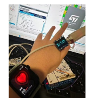
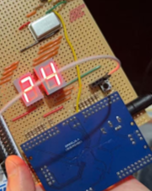
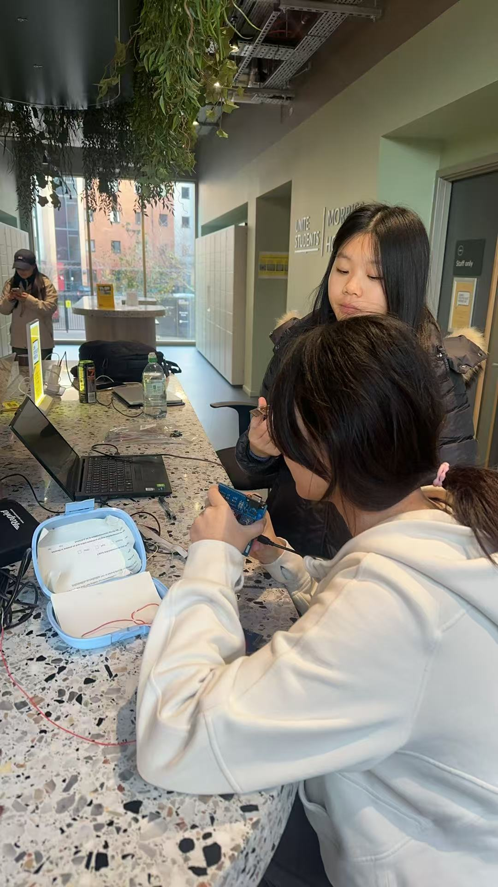

2025.10–2026.02
嵌入式脉搏血氧仪
结合模拟信号采集、STM32 与 CPLD，实现心率和血氧测量及数据显示。
STM32 · CPLD · 信号处理
项目背景与目标
待补充：项目需要解决的具体问题、约束条件和目标。
工作内容与方法
采用 TIA 与二级信号调理采集 PPG 信号，通过 FFT 与电压比值法计算参数；使用 CPLD 实现 UART 接收、解码和数码管显示，并通过 RS-485 传输数据。
成果与验证
系统测试心率误差小于 ±2 bpm。
项目图集


原型与测试记录


通信与数字信号


设计笔记

后续补充资料
待补充：本人负责部分、参考设备型号、测试人数或次数，以及血氧验证结果。
总结与收获
待补充：遇到的困难、关键选择，以及学到的方法。
← 返回项目列表